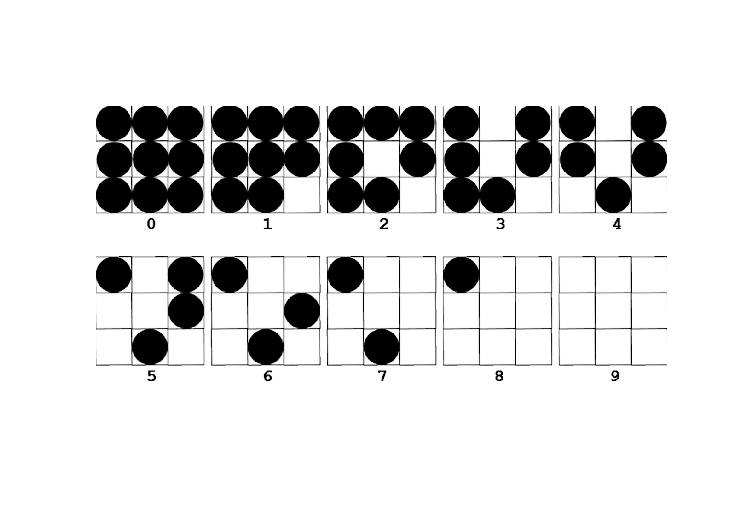
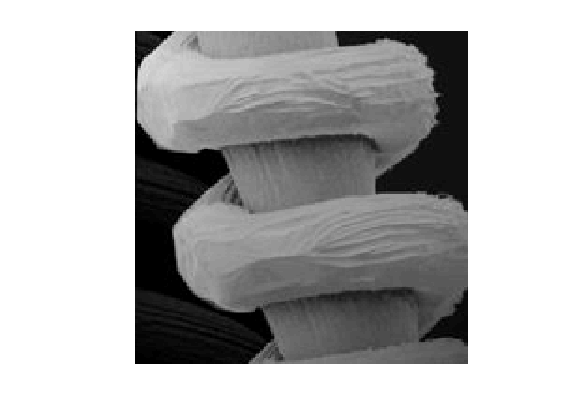
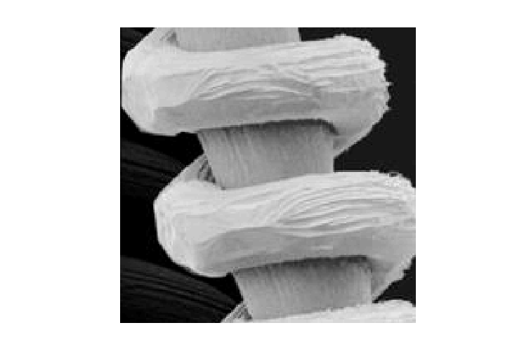
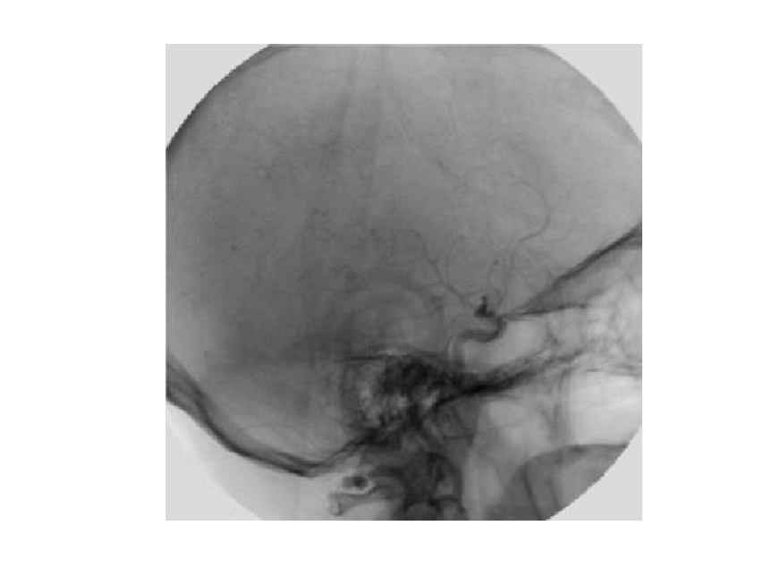
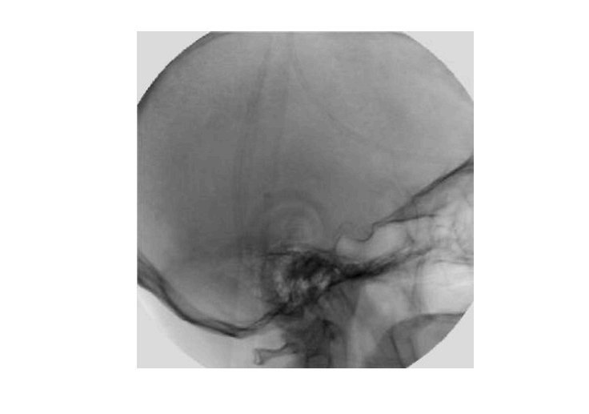
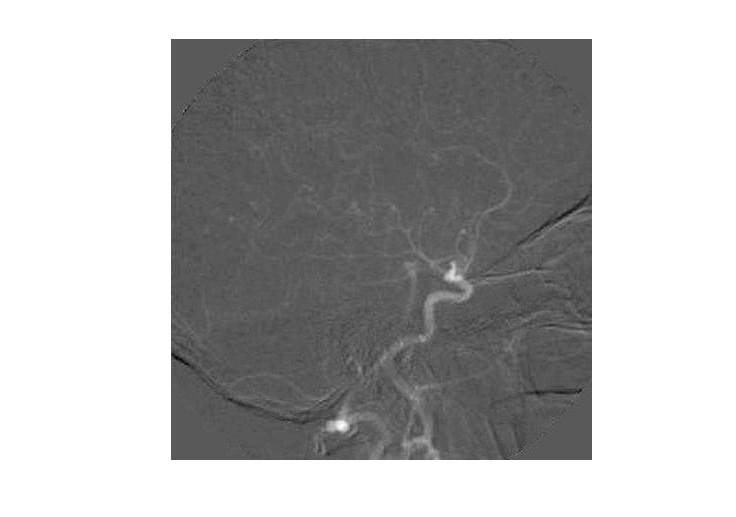
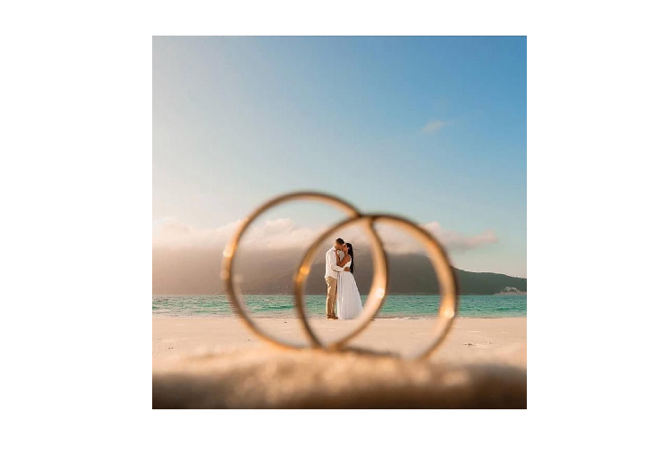
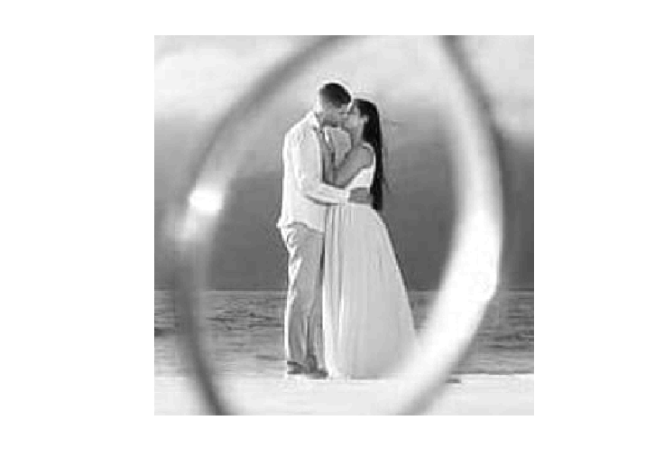

<!DOCTYPE html>
<html>
<head>
<meta charset="UTF-8">
<title>Projeto 02</title>
<script type="text/x-mathjax-config">
MathJax.Hub.Config({
  tex2jax: { inlineMath: [['$','$'], ['\\(','\\)']] },
  TeX: { equationNumbers: { autoNumber: 'all' } }
});
</script>
<script type="text/javascript" async src="https://cdnjs.cloudflare.com/ajax/libs/mathjax/2.7.1/MathJax.js?config=TeX-MML-AM_CHTML"></script>

<style>
body > * {
  max-width: 42em;
}
body {
  font-family: "Roboto Condensed", sans-serif;
  padding-left: 7.5em;
  padding-right: 7.5em;
}
pre, code {
  max-width: 50em;
  font-family: monospace;
}
pre.oct-code {
  border: 1px solid Grey;
  padding: 5px;
}
pre.oct-code-output {
  margin-left: 2em;
}
span.comment {
  color: ForestGreen;
}
span.keyword {
  color: Blue;
}
span.string {
  color: DarkOrchid;
}
footer {
  margin-top: 2em;
  font-size: 80%;
}
a, a:visited {
  color: Blue;
}
h2 {
  font-family: "Roboto Condensed", serif;
  margin-top: 1.5em;
}
h2 a, h2 a:visited {
  color: Black;
}
</style>

</head>
<body>
<h1>Projeto 02</h1>

<p>Autor: Marlon da Silva Rogério</p>

<h2>Contents</h2>
<ul>
<li><a href="#node1">Referências</a></li>
<li><a href="#node2">Parte 01</a></li>
<li><a href="#node3">Halftoning</a></li>
<li><a href="#node4">Valores de Referência</a></li>
<li><a href="#node5">Parte 02</a></li>
<li><a href="#node6">Parte 03</a></li>
<li><a href="#node7">Pearte 04</a></li>
</ul>
<h2><a id="node1">Referências</a></h2>
<p>GONZALEZ, R. C., WOODS, R. E. Processamento de Imagens Digitais. Editora Edgard Blucher, ISBN  São Paulo, 2000.
Halftone, 2021. Disponível em: <a href="https://en.wikipedia.org/wiki/Halftone">https://en.wikipedia.org/wiki/Halftone</a>. Acesso  em: 25 de abr. de 2021.
Support MathWorks, 2021. Disponível em: <a href="https://www.mathworks.com/help/">https://www.mathworks.com/help/</a>. Acesso  em: 25 de abr. de 2021.</p>
<h2><a id="node2">Parte 01</a></h2>
<p>(1) Definir e Formalizar
1.1 Implementar um algoritmo ‘halftoning’ utilizando a técnica de Thresholding (limiarização) fazer de forma simples.
1.2 Aplicar a uma imagem escala de cinza.</p>

<pre class="oct-code">close all; clear; clc;

img = imread(<span class="string">'ufac.jpeg'</span>);
img = imresize(img, [328 226]);
imshow(img)</pre>
<h2><a id="node3">Halftoning</a></h2>
<p>Halftoning (Meio-tom) é a técnica reprográfica que simula imagens em tons contínuos por meio
do uso de pontos, variando em tamanho ou espaçamento, gerando assim um efeito
de gradiente. Halftoning também pode ser usado para se referir especificamente
à imagem produzida por esse processo. <a href="//en.wikipedia.org">//en.wikipedia.org</a></p>

<pre class="oct-code">pontos_linhas = [];
pontos_colunas = [];

<span class="keyword">for</span> linha = 1:328
  pontos_linhas = [];
  <span class="keyword">for</span> coluna = 1:226
    ponto = img(linha, coluna);
    <span class="keyword">if</span> ponto &gt;= 0 &amp;&amp; ponto &lt; 32
      matriz_half = [ 0 0 0;
                      0 0 0;
                      0 0 0 ];
    <span class="keyword">elseif</span> ponto &gt;= 32 &amp;&amp; ponto &lt; 64
      matriz_half = [ 1 0 0;
                      0 0 1;
                      0 1 0 ];
    <span class="keyword">elseif</span> ponto &gt;= 64 &amp;&amp; ponto &lt; 128
      matriz_half = [ 1 1 1;
                      1 0 1;
                      1 1 0 ];
    <span class="keyword">elseif</span> ponto &gt;= 128 &amp;&amp; ponto &lt; 256
      matriz_half = [ 1 1 1 ;
                      1 1 1 ;
                      1 1 1 ];
    <span class="keyword">endif</span>
    pontos_linhas = [pontos_linhas matriz_half];
  <span class="keyword">endfor</span>
  pontos_colunas = [pontos_colunas; pontos_linhas];
<span class="keyword">endfor</span>

figure
imshow(pontos_colunas)</pre>
<h2><a id="node4">Valores de Referência</a></h2>
<p>A submatriz assumiu os valores para escala de cinza do halftone conforme imagem
abaixo:
0 2 6 0</p>

<pre class="oct-code">grayscale_halftone = imread(<span class="string">'grayscale.png'</span>);
figure
imshow(grayscale_halftone)</pre>
<h2><a id="node5">Parte 02</a></h2>
<p>(2) Defina a correção de sombreamento de uma imagem.
Aplique a correção de sombreamento de uma imagem
Imagem: tungsten_filament_shaded.tif; padrão: tungsten_sensor_shading.tif</p>

<pre class="oct-code">close all; clear; clc;

img_filamento = imread(<span class="string">'tungsten_filament_shaded.bmp'</span>);
figure
imshow(img_filamento)
img_correcao = imread(<span class="string">'tungsten_sensor_shading.bmp'</span>);
figure
imshow(img_correcao)
img_corrigida = double(img_filamento)./ double(img_correcao);
figure
imshow(img_corrigida)</pre>
<h2><a id="node6">Parte 03</a></h2>
<p>(3) Aplique a operação diferença de duas imagens.
 Imagem: angiography_mask_image.tif; image: angiography_live_ image.tif</p>

<pre class="oct-code">close all; clear; clc;

angiografia_ogirinal = imread(<span class="string">'angiography_live_ image.bmp'</span>);
figure
imshow(angiografia_ogirinal)

angiografia_mascara = imread(<span class="string">'angiography_mask_image.bmp'</span>);
figure
imshow(angiografia_mascara)

diferenca_imagens = double(angiografia_mascara).-double(angiografia_ogirinal);
figure
imshow(diferenca_imagens, [])</pre>
<h2><a id="node7">Pearte 04</a></h2>
<p>(4) Defina o ROI (Region of Interesse)
  Destaque uma ROI de uma imagem</p>

<pre class="oct-code">close all; clear; clc;

img = imread(<span class="string">'aliancas.jpeg'</span>);
figure
imshow(img);
myROI = img(550:850, 400:700);

figure
imshow(myROI,[])</pre>

<footer>
<hr>
<a href="https://www.octave.org">Published with GNU Octave 6.2.0</a>
</footer>
<!--
##### SOURCE BEGIN #####
%% Projeto 02
% Autor: Marlon da Silva Rogério

%% Referências
% GONZALEZ, R. C., WOODS, R. E. Processamento de Imagens Digitais. Editora Edgard Blucher, ISBN  São Paulo, 2000.
% Halftone, 2021. Disponível em: <https://en.wikipedia.org/wiki/Halftone>. Acesso  em: 25 de abr. de 2021.
% Support MathWorks, 2021. Disponível em: <https://www.mathworks.com/help/>. Acesso  em: 25 de abr. de 2021.

%% Parte 01
% (1) Definir e Formalizar
% 1.1 Implementar um algoritmo ‘halftoning’ utilizando a técnica de Thresholding (limiarização) fazer de forma simples.
% 1.2 Aplicar a uma imagem escala de cinza.

close all; clear; clc;

img = imread('ufac.jpeg');
img = imresize(img, [328 226]);
imshow(img)

%% Halftoning
% Halftoning (Meio-tom) é a técnica reprográfica que simula imagens em tons contínuos por meio
% do uso de pontos, variando em tamanho ou espaçamento, gerando assim um efeito
% de gradiente. Halftoning também pode ser usado para se referir especificamente
% à imagem produzida por esse processo. <//en.wikipedia.org>

pontos_linhas = [];
pontos_colunas = [];

for linha = 1:328
  pontos_linhas = [];
  for coluna = 1:226
    ponto = img(linha, coluna);
    if ponto >= 0 && ponto < 32
      matriz_half = [ 0 0 0;
                      0 0 0;
                      0 0 0 ];
    elseif ponto >= 32 && ponto < 64
      matriz_half = [ 1 0 0;
                      0 0 1;
                      0 1 0 ];
    elseif ponto >= 64 && ponto < 128
      matriz_half = [ 1 1 1;
                      1 0 1;
                      1 1 0 ];
    elseif ponto >= 128 && ponto < 256
      matriz_half = [ 1 1 1 ;
                      1 1 1 ;
                      1 1 1 ];
    endif
    pontos_linhas = [pontos_linhas matriz_half];
  endfor
  pontos_colunas = [pontos_colunas; pontos_linhas];
endfor

figure
imshow(pontos_colunas)

%% Valores de Referência
% A submatriz assumiu os valores para escala de cinza do halftone conforme imagem
% abaixo:
% 0 2 6 0

grayscale_halftone = imread('grayscale.png');
figure
imshow(grayscale_halftone)


%% Parte 02
% (2) Defina a correção de sombreamento de uma imagem.
% Aplique a correção de sombreamento de uma imagem
% Imagem: tungsten_filament_shaded.tif; padrão: tungsten_sensor_shading.tif

close all; clear; clc;

img_filamento = imread('tungsten_filament_shaded.bmp');
figure
imshow(img_filamento)
img_correcao = imread('tungsten_sensor_shading.bmp');
figure
imshow(img_correcao)
img_corrigida = double(img_filamento)./ double(img_correcao);
figure
imshow(img_corrigida)


%% Parte 03
% (3) Aplique a operação diferença de duas imagens.
%  Imagem: angiography_mask_image.tif; image: angiography_live_ image.tif

close all; clear; clc;

angiografia_ogirinal = imread('angiography_live_ image.bmp');
figure
imshow(angiografia_ogirinal)

angiografia_mascara = imread('angiography_mask_image.bmp');
figure
imshow(angiografia_mascara)

diferenca_imagens = double(angiografia_mascara).-double(angiografia_ogirinal);
figure
imshow(diferenca_imagens, [])


%% Pearte 04
% (4) Defina o ROI (Region of Interesse)
%   Destaque uma ROI de uma imagem

close all; clear; clc;

img = imread('aliancas.jpeg');
figure
imshow(img);
myROI = img(550:850, 400:700);

figure
imshow(myROI,[])
##### SOURCE END #####
-->
</body>
</html>
